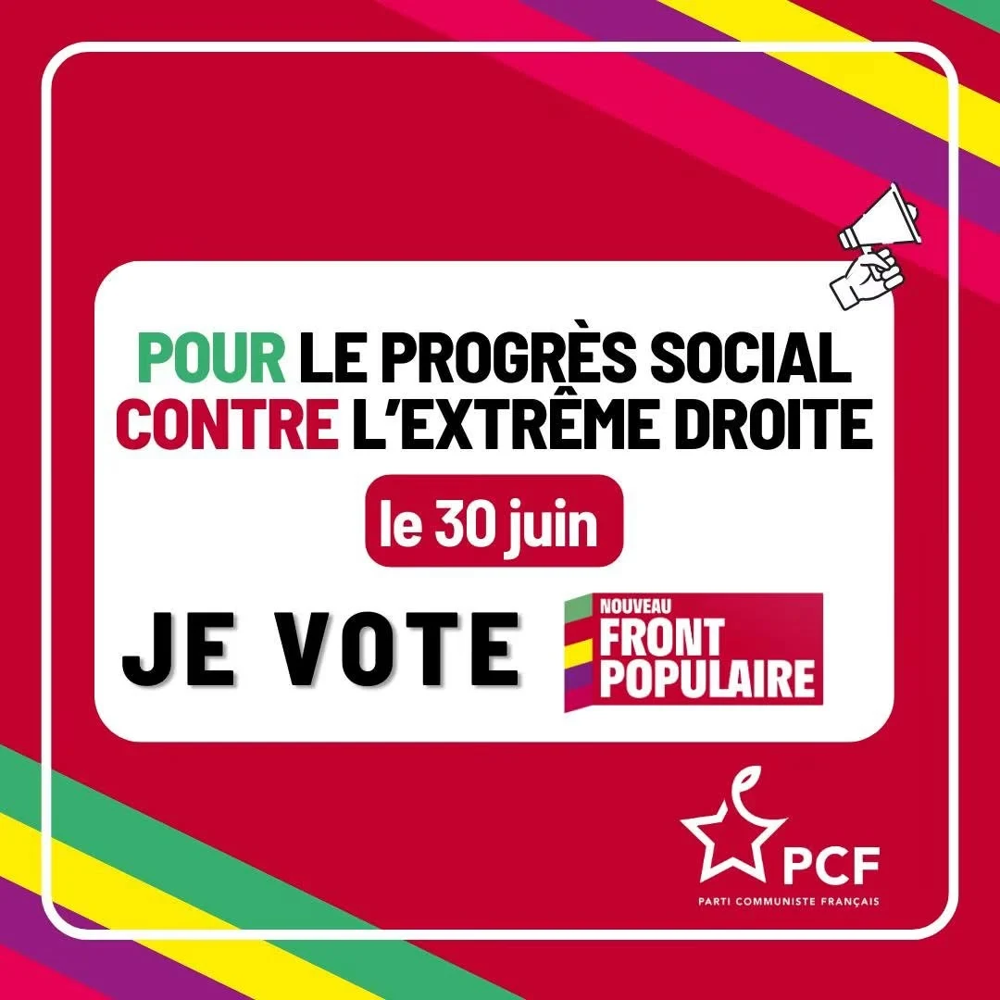

Publication relayée par le PCF 79
Le PCF dresse le bilan de la campagne avant le premier tour des législatives
Date de mise à jour indiquée par Facebook · 28 juin 2024
Texte de la publication · PCF national
Ce soir s’achève le premier tour de la campagne électorale la plus courte de toute l’histoire de la République.
C’est le choix d’un homme seul. Un président de la République disqualifié aux yeux des Françaises et des Français et dont les candidat·es n’apportent rien de neuf pour répondre aux attentes de nos concitoyen·nes.
Dimanche prochain, nous devons tout faire pour les battre dans les urnes.
Comme nous devons tout faire pour battre aussi les candidat·es de l’extrême droite ! Car la menace pour notre République, pour nos services publics, pour nos libertés est sérieuse et grave.
Plutôt que de mettre à profit le reste de son mandat pour combattre – comme il l’avait promis - les causes profondes de la montée du Rassemblement national, Emmanuel Macron a fait le choix de lui ouvrir les portes du pouvoir, de lui donner les clefs de la République.
Cette perspective a déjà des effets.
Avec des candidat·es RN ayant des propos racistes et antisémites, dans de nombreux endroits, les paroles haineuses se libèrent. Insultes racistes, antisémites, homophobes s’affichent de plus en plus ; décomplexées, contraires à toutes les valeurs républicaines, mortifères pour notre cohésion sociale.
Soyons en certain·es : ils ne doivent pas l’emporter. Après les mots viendront les actes.
Quand la parole politique légitime et banalise l’expression de la haine, c’est la société tout entière qui risque de basculer dans la violence, et la démocratie et nos valeurs républicaines qui sont mises en danger.
Ne laissons pas l’extrême droite mettre la main sur la République.
Votez pour les candidates, les candidats du Nouveau Front Populaire. Cet avenir là, fait de divisions et de tensions, n’est pas inéluctable.
Dimanche, dans chaque bureau de vote, un bulletin de vote « Nouveau Front populaire » sera à votre disposition.
C’est le bulletin d’une gauche qui a su se rassembler, face au péril de l’extrême droite, pour porter le projet d’une France apaisée et d’une République heureuse, utile et protectrice.
C’est la garantie de mettre en œuvre des mesures immédiates pour répondre aux urgences sociale et écologique du pays, de reprendre la main sur nos richesses pour les mettre au service du développement humain, de la paix, de la liberté et de la fraternité .
Dimanche, vous avez le choix. L’avenir du pays est entre vos mains.
Choisissez les candidats et candidates de l’union de la gauche et des écologistes, choisissez le Nouveau Front Populaire !
Fabien Roussel, secrétaire national du PCF
Vendredi 28 juin 2024

Sources
PCF national · publication relayée par le PCF 79 · bibliothèque Facebook · AR-0002-FB-01337
À lire aussi · Législatives 2024. Le PCF réagit aux résultats du premier tour